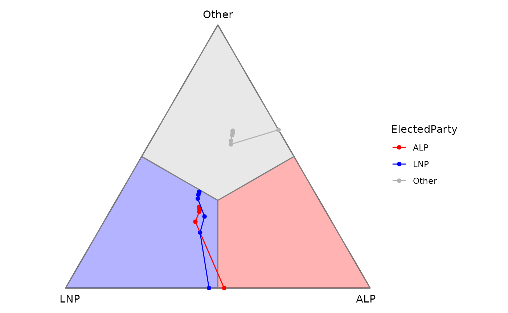
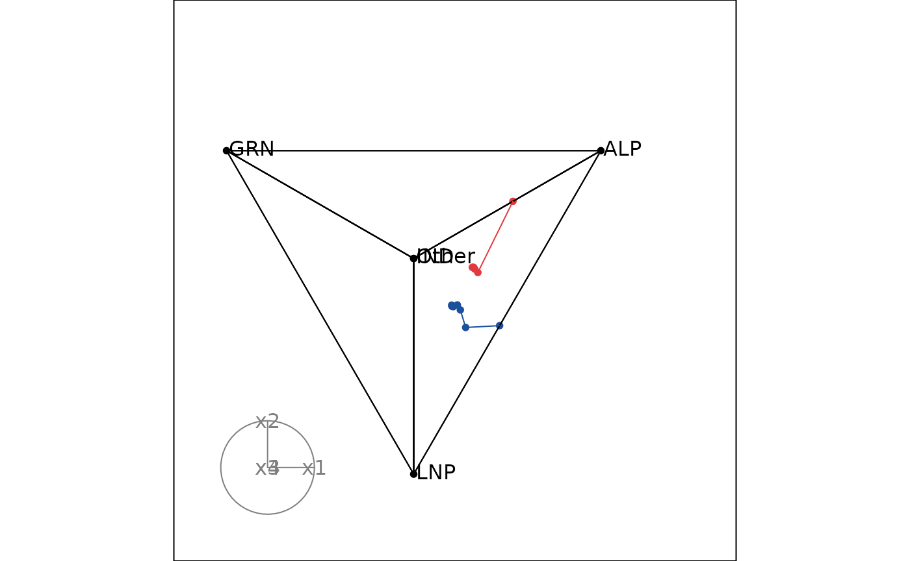
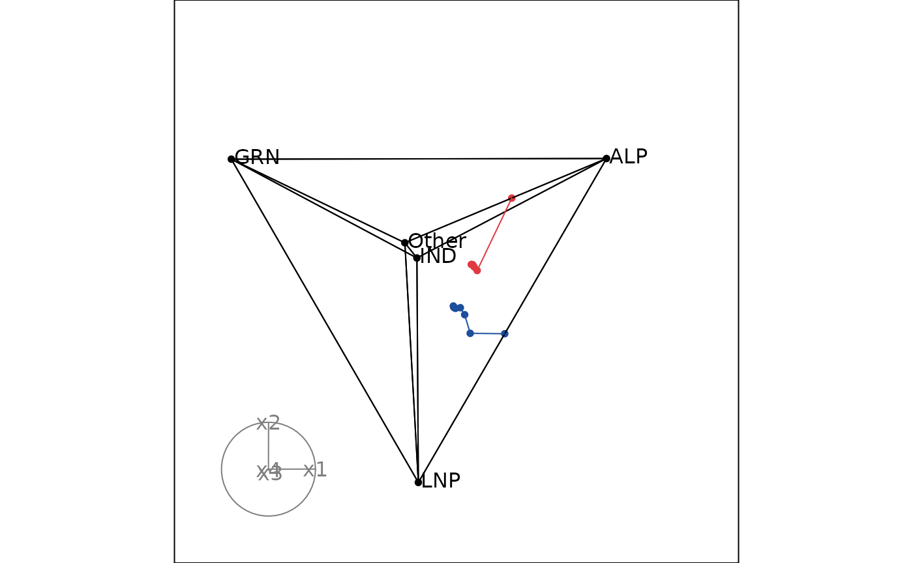

Adding ordered path to your ternary plot
Source:vignettes/add_ordered_path.Rmd
add_ordered_path.RmdAdding paths between points in a ternary space can help illustrate transitions or sequences in the data.
In the example of instant-runoff voting in Australian Federal Election, these paths can be used to illustrate the change in preference distribution between rounds of voting in one electorate. This vignette shows how to add paths to both 2D and high-dimensional ternary plots.
2D ternary plot
Take the example of the 2022 Australian Federal Election, we would like to take a look at the changes in preference distribution across rounds in three electorates: Higgins, Monash, and Melbourne.
Input data is already in a ternable-friendly format,
with each row representing the preference distribution in one round of
voting in one electorate.
aecdop22_widen <- prefviz:::aecdop22_widen
input_df <- aecdop22_widen |>
filter(DivisionNm %in% c("Higgins", "Monash", "Melbourne"))
head(input_df)
#> # A tibble: 6 × 6
#> DivisionNm CountNumber ElectedParty ALP LNP Other
#> <chr> <dbl> <chr> <dbl> <dbl> <dbl>
#> 1 Higgins 0 ALP 0.285 0.407 0.309
#> 2 Higgins 1 ALP 0.285 0.407 0.307
#> 3 Higgins 2 ALP 0.288 0.409 0.303
#> 4 Higgins 3 ALP 0.292 0.411 0.297
#> 5 Higgins 4 ALP 0.294 0.416 0.290
#> 6 Higgins 5 ALP 0.300 0.448 0.252
# Create ternable object
tern22 <- ternable(input_df, ALP:Other)For 2D ternary plots, adding ordered paths is straightforward using
the stat_ordered_path() function, and providing the
order_by aesthetic. This is equivalent to
geom_path() when you pre-order your data points in the
order you want them to be connected.
In this case, we want to connect the points in the order of round
(order_by = CountNumber) for each electorate
(group = DivisionNm).
# The base plot
p <- get_tern_data(tern22, plot_type = "2D") |>
ggplot(aes(x = x1, y = x2)) +
geom_ternary_cart() +
geom_ternary_region(
aes(fill = after_stat(vertex_labels)),
vertex_labels = tern22$vertex_labels,
alpha = 0.3, color = "grey50",
show.legend = FALSE
) +
geom_point(aes(color = ElectedParty)) +
add_vertex_labels(tern22$simplex_vertices) +
scale_color_manual(
values = c("ALP" = "red", "LNP" = "blue", "Other" = "grey70"),
aesthetics = c("fill", "colour")
)
# Add ordered paths
p + stat_ordered_path(
aes(group = DivisionNm, order_by = CountNumber, color = ElectedParty),
size = 0.5
)
It’s interesting to see such a close win of ALP in Higgins (red line) since the result only flipped in the last round. Meanwhile, wins in Monash and Melbourne were consistent with first preference.
High-dimensional ternary plot
Let’s take a look at Monash and Melbourne in 2025 election, but this time we will use a high-dimensional ternary plot with 5 parties: ALP, LNP, GRN, IND, and Other.
Unlike 2D ternary plots, we need to group and order the data before
plotting by providing the group and order_by
arguments when creating ternable object. Since this data is already
ordered by round in the input data frame, we just need to provide the
grouping variable (DivisionNm).
aecdop25_widen <- prefviz:::aecdop25_widen
input_df2 <- aecdop25_widen |>
filter(DivisionNm %in% c("Monash", "Melbourne"))
head(input_df2)
#> # A tibble: 6 × 8
#> DivisionNm CountNumber ElectedParty ALP GRN LNP Other IND
#> <chr> <dbl> <chr> <dbl> <dbl> <dbl> <dbl> <dbl>
#> 1 Melbourne 0 ALP 0.313 0 0.198 0.439 0.0495
#> 2 Melbourne 1 ALP 0.316 0 0.199 0.444 0.0408
#> 3 Melbourne 2 ALP 0.321 0 0.201 0.434 0.0444
#> 4 Melbourne 3 ALP 0.326 0 0.212 0.408 0.0538
#> 5 Melbourne 4 ALP 0.343 0 0.236 0.421 0
#> 6 Melbourne 5 ALP 0.530 0 0 0.470 0
# Create ternable object
tern25 <- ternable(input_df2, ALP:IND, group = DivisionNm)Adding paths in a high-dimensional ternary plot is made possible by
the edges arguments in display_xy().
Therefore, besides simplex edges, we need to provide the data edges to
the edges argument. This can be done by setting
include_data = TRUE in get_tern_edges().
# Add colors
party_colors <- c(
"ALP" = "#E13940", # Red
"LNP" = "#1C4F9C", # Blue
"GRN" = "#10C25B", # Green
"IND" = "#F39C12", # Orange
"Other" = "#95A5A6" # Gray
)
color_vector <- c(rep("black", 5),
party_colors[input_df2$ElectedParty])
edges_color <- c(rep("black", nrow(tern25$simplex_edges)),
party_colors[input_df2$ElectedParty])
# Animate the tour
animate_xy(
get_tern_data(tern25, plot_type = "HD"),
col = color_vector,
edges = get_tern_edges(tern25, include_data = TRUE),
edges.col = edges_color,
obs_labels = get_tern_labels(tern25),
axes = "bottomleft"
)